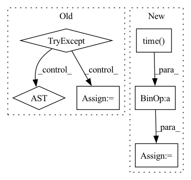

Pattern ID :9643

Before Change
logging.info("Building Keras ResNet-50 model")
// Shape tuple access depends on number of distributed devices
try:
shape_tuple = dataset_train.element_spec["features"].shape
except AttributeError: // Multiple TensorSpec in a (nested) PerReplicaSpec.
tensor_spec_list = dataset_train.element_spec[ // pylint: disable=protected-access
"features"]._flat_tensor_specs
shape_tuple = tensor_spec_list[0].shape
After Change
logging.info(
"Starting to run eval step %s of epoch: %s", step, epoch + 1)
test_start_time = time.time()
test_step(test_iterator)
ms_per_example = (time.time() - test_start_time) * 1e6 / eval_batch_size
metrics["test/ms_per_example"].update_state(ms_per_example)
logging.info(
In pattern: SUPERPATTERN
Frequency: 3
Non-data size: 6
Instances
Fragment ID: 34765586
Project Name: google/uncertainty-baselines
Commit Name: 9ecb3b3be23c87f66826ff1849bb00f300f08cec
Time: 2021-01-10
Author: 20114038+nband@users.noreply.github.com
File Name: baselines/diabetic_retinopathy_detection/deterministic.py
M Class Name: AnonimousClass
N Class Name: AnonimousClass
M Method Name: main(1)
N Method Name: main(1)
M Parent Class:
N Parent Class:
M File Name: baselines/diabetic_retinopathy_detection/deterministic.py
N File Name: baselines/diabetic_retinopathy_detection/deterministic.py
M Start Line: 85
M End Line: 142
N Start Line: 97
N End Line: 268
'>
Before Change
import ntplib
import datetime
from datetime import timezone
try:
ntp_client = ntplib.NTPClient()
ntp_time = datetime.datetime.utcfromtimestamp(ntp_client.request("pool.ntp.org").tx_time)
ntp_time = ntp_time.replace(tzinfo=timezone.utc).timestamp()
return ntp_time
except Exception as e:
pass
return None
After Change
MLOpsProfilerEvent._ntp_offset = MLOpsUtils.get_ntp_offset()
if MLOpsProfilerEvent._ntp_offset is not None:
ntp_time_seconds = time.time() + MLOpsProfilerEvent._ntp_offset
return ntp_time_seconds
return time.time()
'>
Fragment ID: 34765618
Project Name: fedml-ai/fedml
Commit Name: dc5010194dc1651e6a9dc58f6deee5fe633b71f5
Time: 2023-03-24
Author: alexliang.kh@gmail.com
File Name: python/fedml/core/mlops/mlops_profiler_event.py
M Class Name: MLOpsProfilerEvent
N Class Name: MLOpsProfilerEvent
M Method Name: get_ntp_time(0)
N Method Name: get_ntp_time(0)
M Parent Class:
N Parent Class:
M File Name: python/fedml/core/mlops/mlops_profiler_event.py
N File Name: python/fedml/core/mlops/mlops_profiler_event.py
M Start Line: 114
M End Line: 122
N Start Line: 114
N End Line: 121
'>
Before Change
import ntplib
import datetime
from datetime import timezone
try:
ntp_client = ntplib.NTPClient()
ntp_time = datetime.datetime.utcfromtimestamp(ntp_client.request("pool.ntp.org").tx_time)
ntp_time = ntp_time.replace(tzinfo=timezone.utc).timestamp()
return ntp_time
except Exception as e:
pass
return None
After Change
MLOpsProfilerEvent._ntp_offset = MLOpsUtils.get_ntp_offset()
if MLOpsProfilerEvent._ntp_offset is not None:
ntp_time_seconds = time.time() + MLOpsProfilerEvent._ntp_offset
return ntp_time_seconds
return time.time()
'>
Fragment ID: 34765590
Project Name: fedml-ai/fedml
Commit Name: 61def35fad1e5351019fa7516c6adc8b3941e123
Time: 2023-03-24
Author: alex.gpt.llm@gmail.com
File Name: python/fedml/core/mlops/mlops_profiler_event.py
M Class Name: MLOpsProfilerEvent
N Class Name: MLOpsProfilerEvent
M Method Name: get_ntp_time(0)
N Method Name: get_ntp_time(0)
M Parent Class:
N Parent Class:
M File Name: python/fedml/core/mlops/mlops_profiler_event.py
N File Name: python/fedml/core/mlops/mlops_profiler_event.py
M Start Line: 114
M End Line: 122
N Start Line: 114
N End Line: 121